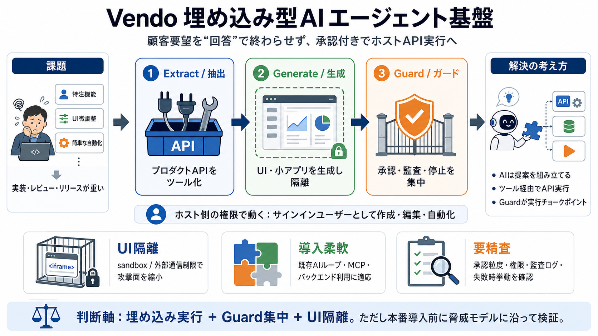

AI Agent Hosting: Options, Setup, and Deployment
If you are looking for a framework that handles the deployment surface alongside agent logic, Mastra is an open-source T…

特注機能 / UIの微調整 / 簡単な自動化
実装・レビュー・リリースの負担が大きい
必要な変更を組み立てる
ホストAPIに到達（ただし制御下）
承認/監査/ブレーカーで止める
プロダクトAPIを“ツール”として使える形にする
ビュー/小さなアプリを生成し、必要時は隔離
承認・監査・安全制御を一本化し実行を決める
作成 / 編集 / 自動化（ホスト機能を実際に呼ぶ）
回答だけで終わり、顧客の実作業が残る
顧客環境での生成UIの攻撃面を縮める
iframe jail / sandboxed render / 外部通信制限
許可/不許可のルール
必要時に人の判断を挟む
何を誰がいつ実行したかを追える
条件に応じて停止する
既存エージェントのループへ組み込み
外部クライアントへホスト機能を提供
状態/ストレージ
実行の枠組み・アクション
安全制御・アプリ
PGlite（初期設定を最小化）
Postgres（同スキーマで移行）
npm + init（短い立ち上げ）
Extract/Generate/Guard の順に調整
サインインユーザーとしてツール実行
抽出/生成/ガードを分離
iframe jail / sandbox / 通信制限
承認粒度/権限スコープ/監査ログ/失敗時挙動
保存期間・検索性・停止条件・ロール設計
埋め込み実行 + Guard集中 + UI隔離
承認/監査/ブレーカー/失敗時/データ境界の仕様確認
If you are looking for a framework that handles the deployment surface alongside agent logic, Mastra is an open-source T…
because they're operating at the different layers. AI SDK focuses on model interaction, where Mastra focuses more on app…
Which one are you? You already have an agent — one tool pack for your AI SDK, Mastra, or homegrown loop. Your prod…
Its documentation includes integrations and implementation guides for agent frameworks and coding tools, including Mastr…
Product Summary Mastra is a TypeScript-first agent framework for building production AI applications. It provides primi…